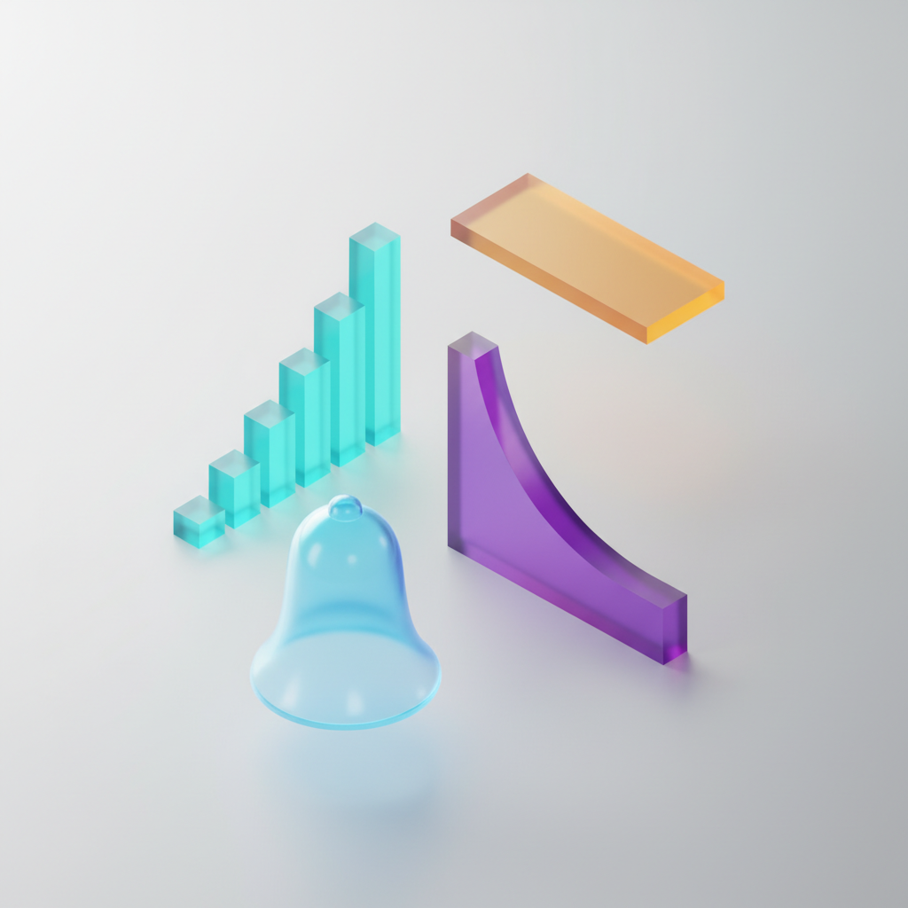

$P(Z \le z)$ — Click any cell to highlight. Row = ones + tenths, Column = hundredths.
How to read: To find $P(Z \le 1.96)$: go to row 1.9, column .06 → read 0.9750
Poisson CDF Table
$P(X \le x) = \sum_{k=0}^{x} \dfrac{e^{-\lambda} \lambda^k}{k!}$ — Click any cell to highlight and see the visual.
How to read: Pick a row ($\lambda$ = rate) and a column ($x$ = max value). The cell is $P(X \le x)$ for that Poisson process.
Visual
■ k ≤ x (cumulative)■ k > x

IE 6400 — Foundations of Data Analytics
Probability Distributions
Bernoulli, Binomial, Normal & Poisson with interactive tools & real-world applications
1 / 30Prof. Mohammad DehghaniNortheastern University
MEET THE MATHEMATICIAN
Jakob Bernoulli
Basel, Switzerland · 1654–1705
From a family that produced eight brilliant mathematicians across three generations. Jakob's masterwork Ars Conjectandi (1713) formalized the law of large numbers and introduced what we now call the Bernoulli trial.
HIS QUESTION
"If I flip a coin many, many times... does the fraction of heads eventually settle down to exactly 1/2?"
He proved: yes. That's the Law of Large Numbers.
2 / 30Prof. Mohammad DehghaniNortheastern University
THE SIMPLEST DISTRIBUTION
Bernoulli Distribution
One trial. Two outcomes. That's it.
PMF
$$P(X=1)=p$$
$$P(X=0)=1-p$$
PARAMETERS
$$E[X] = p$$
$$\text{Var}(X) = p(1-p)$$
TRAITS
Only 0 or 1
Single trial
Foundation for Binomial
REAL EXAMPLES
Coin flip·Pass/fail a test·Click or not·Defective or not
3 / 30Prof. Mohammad DehghaniNortheastern University
n BERNOULLI TRIALS
Binomial Distribution
Repeat a Bernoulli trial $n$ times. Count the successes.
PMF
$$P(X{=}k) = \binom{n}{k} p^k (1-p)^{n-k}$$
PARAMETERS
$$E[X] = np$$
$$\text{Var}(X) = np(1-p)$$
TRAITS
Fixed $n$ trials
Independent trials
Same $p$ each time
Discrete: 0, 1, ..., n
4 / 30Prof. Mohammad DehghaniNortheastern University
SUBMIT
QUESTION
Steph Curry: 10 Free Throws
Steph Curry has a career free throw success rate of 91%. In tonight's game, he takes 10 free throws. Each shot is independent of the others.
Q1: P(makes all 10)?
Q2: Expected makes?
Q3: P(exactly 8)?
STEP 1 — DEFINE R.V.
Let $X \triangleq$ free throws made (out of 10)
$x \in \{0, 1, 2, \ldots, 10\}$
STEP 2 — IDENTIFY DISTRIBUTION
$X \sim \text{Bin}(n{=}10,\; p{=}0.91)$
Why? Fixed n=10, independent shots, same p each time, counting successes.
STEP 3 — COMPUTE
Q1: P(all 10)
$0.91^{10}$
$= \boxed{0.389}$
Q2: E[X]
$np = 10 \times 0.91$
$= \boxed{9.1}$
Q3: P(X=8)
$\binom{10}{8}(0.91)^8(0.09)^2$
$= \boxed{0.172}$
STEP 4 — INTERPRET
Curry has a 39% chance of going 10-for-10. On average: 9.1 out of 10.
5 / 30Prof. Mohammad DehghaniNortheastern University
SUBMIT
QUESTION
iPhone Assembly: Defect Rate
Apple's assembly line has a 2% defect rate. A quality inspector randomly selects 50 iPhones. Each phone is independently inspected.
Why? Fixed n=50, independent inspections, same p=0.02, counting defects.
STEP 3 — COMPUTE
Q1: E[X]
$50 \times 0.02$
$= \boxed{1}$ defect
Q2: P(X=0)
$(0.98)^{50}$
$= \boxed{0.364}$
Q3: P(X≥3)
$1-P(0)-P(1)-P(2)$
$= \boxed{0.079}$
STEP 4 — INTERPRET
Only 7.9% chance of 3+ defects in 50 phones. Apple's quality holds up.
6 / 30Prof. Mohammad DehghaniNortheastern University
DID YOU KNOW?
WWII & the Birth of Quality Control
During WWII, the U.S. military needed to inspect millions of bullets, parachutes, and rations. Statisticians used the Binomial distribution to design acceptance sampling plans. A batch passes if at most $k$ defects are found in $n$ samples.
7 / 30Prof. Mohammad DehghaniNortheastern University
MEET THE MATHEMATICIAN
Carl Friedrich Gauss
Brunswick, Germany · 1777–1855 · "The Prince of Mathematicians"
At age 7, he instantly summed all numbers from 1 to 100 (answer: 5,050). He went on to formalize the normal distribution — the most important distribution in all of statistics.
The bell curve appears in: heights, IQ scores, measurement errors, stock returns, blood pressure, exam grades — nature defaults to normal.
His face was on the German 10-mark banknote — next to a bell curve.
8 / 30Prof. Mohammad DehghaniNortheastern University
$P(\mu{-}2\sigma \le X \le \mu{+}2\sigma)$
$= P\!\left(\dfrac{\mu{-}2\sigma{-}\mu}{\sigma} \le Z \le \dfrac{\mu{+}2\sigma{-}\mu}{\sigma}\right)$
$= P(-2 \le Z \le 2)$
$= 2\Phi(2) - 1$
$= 2(0.9772) - 1$
$= \boxed{0.9545}$
↺ BACK
WITHIN 3σ
99.73%
$P(\mu{-}3\sigma \le X \le \mu{+}3\sigma)$
↻ FLIP
CALCULATION — WITHIN 3σ
$P(\mu{-}3\sigma \le X \le \mu{+}3\sigma)$
$= P\!\left(\dfrac{\mu{-}3\sigma{-}\mu}{\sigma} \le Z \le \dfrac{\mu{+}3\sigma{-}\mu}{\sigma}\right)$
$= P(-3 \le Z \le 3)$
$= 2\Phi(3) - 1$
$= 2(0.9987) - 1$
$= \boxed{0.9973}$
↺ BACK
⟶ Industry asks: What if we go all the way to 6σ? What does that buy us?
15 / 30Prof. Mohammad DehghaniNortheastern University
MOTOROLA • 1986 • THE QUALITY REVOLUTION
Six Sigma: The 3.4 in a Million Standard
If your process spec limits sit at ±6σ from the mean, only 3.4 defects per million opportunities escape (with the standard 1.5σ shift). Pioneered by Motorola in 1986, adopted by GE, Toyota, Honeywell. Today it's the gold standard in manufacturing, healthcare, and software quality.
3σ → 66,800 DPMO
4σ → 6,210 DPMO
5σ → 233 DPMO
6σ → 3.4 DPMO
16 / 30Prof. Mohammad DehghaniNortheastern University
MEET THE MATHEMATICIAN
Simeon Denis Poisson
Paris, France · 1781–1840
His father wanted him to be a surgeon, but he was so clumsy with his hands that he nearly killed a patient. He switched to math. His 1837 paper introduced the distribution that models rare events over time.
The Poisson distribution was first validated by counting Prussian soldiers kicked to death by horses (1898, Ladislaus Bortkiewicz). It fit perfectly.
17 / 30Prof. Mohammad DehghaniNortheastern University
EVENTS OVER TIME
Poisson Distribution
$$P(X{=}k) = \frac{e^{-\lambda} \cdot \lambda^k}{k!} \qquad X \sim \text{Poisson}(\lambda)$$
PARAMETERS
$$E[X] = \lambda$$
$$\text{Var}(X) = \lambda$$
Mean = Variance (unique!)
TRAITS
One parameter: $\lambda$
Discrete: 0, 1, 2, ...
Events are independent
Skewed right for small $\lambda$
REAL EXAMPLES
Customers/hour
Typos per page
Accidents per month
Server crashes/year
18 / 30Prof. Mohammad DehghaniNortheastern University
⚡ Interactive
Poisson PMF Explorer
Drag the slider to see how $\lambda$ reshapes the distribution — watch the mean shift, the spread grow, and the shape become bell-like.
⚙ Parameter
Rate $\lambda$ — events per interval
0.530
3.0
📊 Quick Stats
$E[X]$3.00
$\text{Var}(X)$3.00
$\sigma$1.73
Mode2 or 3
💡 Observe
As $\lambda$ grows, the PMF gradually becomes bell-shaped. Foreshadowing the Normal approximation…
⚠ Caveat: The rate $\lambda$ must stay constant across the interval. If lunch hour spikes the rate, you can't just multiply.
20 / 30Prof. Mohammad DehghaniNortheastern University
SUBMIT
QUESTION
Starbucks: Rush Hour Staffing
A busy Starbucks in Boston tracks customer arrivals during peak hours. On average, 8 customers arrive per hour. Each arrival is independent.
Q1: P(exactly 5 in 1 hr)? Q2: P(0 in 15 min)? Q3: P(10+ in 1 hr)?
STEP 1 — DEFINE R.V.
Let $X \triangleq$ customers arriving in 1 hour
$x \in \{0, 1, 2, \ldots\}$
STEP 2 — IDENTIFY DISTRIBUTION
$X \sim \text{Poisson}(\lambda{=}8)$
Why? Independent events, fixed time interval, counting occurrences, constant rate.
STEP 3 — COMPUTE
Q1: P(X=5)
$\frac{e^{-8} \cdot 8^5}{5!}$
$= \boxed{0.0916}$
Q2: P(0 in 15min)
$\lambda_{15}=2$, $e^{-2}$
$= \boxed{0.135}$
Q3: P(X≥10)
$1-\sum_{k=0}^{9}$
$= \boxed{0.283}$
STEP 4 — INTERPRET
28.3% chance of 10+ customers in peak hour — Starbucks needs extra staff ready.
21 / 30Prof. Mohammad DehghaniNortheastern University
SUBMIT
QUESTION
Server Attacks: How Many Today?
A company's firewall logs an average of 3 cyberattacks per day. Attacks occur independently and at a roughly constant rate.
Q1: P(zero attacks today)? Q2: P(5+ attacks)? The team can handle max 5.
STEP 1 — DEFINE R.V.
Let $X \triangleq$ cyberattacks per day
$x \in \{0, 1, 2, \ldots\}$
STEP 2 — IDENTIFY DISTRIBUTION
$X \sim \text{Poisson}(\lambda{=}3)$
Why? Rare events over time, independent, constant average rate.
STEP 3 — COMPUTE
Q1: P(X=0)
$e^{-3}$
$= \boxed{0.050}$ (5%)
Q2: P(X≥5)
$1-P(0)-P(1)-P(2)-P(3)-P(4)$
$= \boxed{0.185}$ (18.5%)
STEP 4 — INTERPRET
18.5% — almost 1 in 5 days the team is overwhelmed. Time to hire or automate.
22 / 30Prof. Mohammad DehghaniNortheastern University
APPROXIMATION
Poisson → Normal Approximation
When $\lambda$ is large enough, the Poisson PMF is well-approximated by a Normal PDF. Rule of thumb: $\lambda \ge 10$.
PARAMETER
Rate $\lambda$
15.0
✓ APPROX VALID
When OK?
$\lambda \ge 10$ usually works. $\lambda \ge 20$ is excellent.
Continuity correction
$P(X{=}k) \approx P(k{-}0.5 \le Y \le k{+}0.5)$
POISSON ($X \sim \text{Poi}(\lambda)$)
$E[X] = \lambda$ · $\text{Var}(X) = \lambda$
NORMAL APPROX ($Y \sim \mathcal{N}(\lambda, \lambda)$)
$Z = \dfrac{k - \lambda}{\sqrt{\lambda}}$
23 / 30Prof. Mohammad DehghaniNortheastern University
THE FORMULA
Poisson → Normal Approximation
When $\lambda$ is large enough
$$X \sim \text{Poisson}(\lambda) \;\;\Longrightarrow\;\; X \approx Y \sim \mathcal{N}(\lambda,\, \lambda)$$
Same mean. Same variance. Continuous instead of discrete.
① STANDARDIZE
$$Z = \dfrac{k - \lambda}{\sqrt{\lambda}}$$
Convert any value $k$ to a Z-score using $\mu = \lambda$ and $\sigma = \sqrt{\lambda}$.
② CONTINUITY CORRECTION
$$P(X = k) \approx P(k{-}\tfrac{1}{2} \le Y \le k{+}\tfrac{1}{2})$$
Discrete → continuous needs a half-step adjustment for accuracy.
③ WHEN VALID
$\lambda \ge 10$ → usually OK $\lambda \ge 20$ → excellent $\lambda < 5$ → don't
24 / 30Prof. Mohammad DehghaniNortheastern University
NORMAL APPROXIMATION EXAMPLE
Call Center: 100 Calls/Hour
A call center receives an average of 100 calls per hour, arriving independently and at a constant rate. Using the Normal approximation, find $P(X \ge 115)$ — the probability of 115 or more calls in an hour.
Why approximate? Computing $\sum_{k=115}^{\infty} \frac{e^{-100} 100^k}{k!}$ exactly is impractical. With $\lambda{=}100 \gg 10$, the Normal approximation is excellent.
About a 7.4% chance the center sees 115+ calls in an hour. (Exact Poisson answer: 0.0726 — the approximation is within 1%.)
25 / 30Prof. Mohammad DehghaniNortheastern University
DID YOU KNOW?
Kicked by a Horse
In 1898, Ladislaus Bortkiewicz analyzed Prussian cavalry soldiers kicked to death by horses over 20 years. The data fit the Poisson distribution perfectly — proving it models real-world rare events. Today the same math powers call centers, web traffic, insurance claims, and particle physics.
Industry Uses Today
Call CentersWeb TrafficInsuranceEpidemiologyQueueing Theory
26 / 30Prof. Mohammad DehghaniNortheastern University
27 / 30Prof. Mohammad DehghaniNortheastern University
QUICK FIRE
Which Distribution?
Emails arriving per hourPoisson
Heights of students in this roomNormal
Pass/fail on a single exam questionBernoulli
Defective items in a batch of 100Binomial
Weight of cereal boxes from a factoryNormal
Car accidents at an intersection per weekPoisson
28 / 30Prof. Mohammad DehghaniNortheastern University
SUBMIT
FINAL CHALLENGE
Hospital ER Capacity
A hospital ER sees 12 patients per hour on average, arriving independently at a roughly constant rate. Each patient's treatment time varies symmetrically around a mean of 45 minutes with a standard deviation of 10 minutes. The ER has 15 beds.
Q1:What distribution models patient arrivals? What's $P(\text{20+ in one hour})$?
Q2:What's the probability a patient is treated in under 30 min? (Z-score)
Q3:What % of patients take longer than 1 hour?
Q4:Should the hospital add more beds? Use the data to argue yes or no.
29 / 30Prof. Mohammad DehghaniNortheastern University
What You Now Know
🪙
Bernoulli
Single yes/no
🎯
Binomial
Count successes
🔔
Normal
The bell curve
⚡
Poisson
Events per time
Every dataset you'll ever analyze follows one of these. Now you know which one — and why.
Next: Sampling Distributions & Central Limit Theorem
30 / 30Prof. Mohammad DehghaniNortheastern University